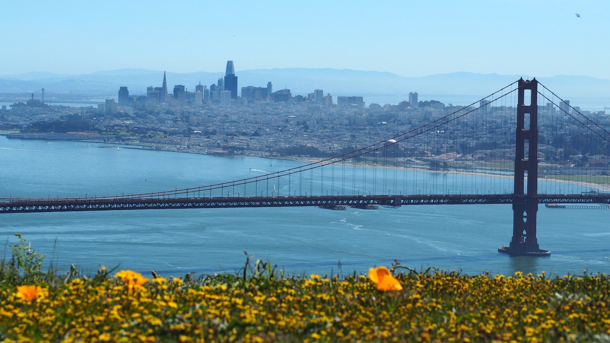

Bay Area Injury Report
Every Bay Area team on one page: who is hurt, how bad it is, and when he is expected back.

The 49ers, the Raiders, the Warriors, the Giants, the A's and the Sharks, all in one place. Yes, the Raiders and the A's left town. Their fans did not, so they stay on the list. Every table refreshes several times a day from the league injury reports, so this one link is all you need.
Jump to: 49ers · Raiders · Warriors · Giants · A's · Sharks
| Team | League | Players listed | Last refreshed |
|---|---|---|---|
| 49ers | NFL | 25 | Fri, Nov 13, 12:05 PM Pacific |
| Raiders | NFL | 8 | Fri, Nov 13, 12:05 PM Pacific |
| Warriors | NBA | 6 | Fri, Nov 13, 12:05 PM Pacific |
| Giants | MLB | 13 | Fri, Nov 13, 12:05 PM Pacific |
| A's | MLB | 12 | Fri, Nov 13, 12:05 PM Pacific |
| Sharks | NHL | 3 | Fri, Nov 13, 12:05 PM Pacific |
49ers injury report
Updated Fri, Nov 13, 12:05 PM Pacific. 1 out or doubtful, 8 questionable, 16 on injured reserve, PUP or another reserve list. Next game: at Dallas Cowboys, Sun, Nov 15, 1:25 PM Pacific.
| Player | Pos | Injury | Status | Expected back | Last update |
|---|---|---|---|---|---|
| Brandon Aiyuk | WR | Personal | Out | About 2 weeks (est. Nov 29) | Mon, Nov 9 |
| Player | Pos | Injury | Status | Expected back | Last update |
|---|---|---|---|---|---|
| Deommodore Lenoir | CB | Foot | Questionable | Questionable | Wed, Nov 11 |
| Renardo Green | CB | Back | Questionable | Questionable | Wed, Nov 11 |
| Upton Stout | CB | Shoulder | Questionable | Questionable | Wed, Nov 11 |
| Dre Greenlaw | LB | Knee | Questionable | Questionable | Thu, Nov 12 |
| Trent Williams | OT | Shoulder | Questionable | Questionable | Thu, Nov 12 |
| Siran Neal | S | Knee | Questionable | Questionable | Wed, Nov 11 |
| Deebo Samuel Sr. | WR | Hamstring, right | Questionable | Questionable | Thu, Nov 12 |
| Mike Evans | WR | Achilles, tendinitis, right | Questionable | Questionable | Thu, Nov 12 |
| Player | Pos | Injury | Status | Expected back | Last update |
|---|---|---|---|---|---|
| Nate Hobbs | CB | Groin | Injured Reserve (designated to return) | Est. Nov 15 | Sat, Nov 7 |
| Andrew Farmer II | DE | Back | Injured Reserve | Out for the season (est.) | Thu, Jul 30 |
| Mikail Kamara | DE | Knee | Injured Reserve | Out for the season (est.) | Mon, Aug 3 |
| Alfred Collins | DT | Knee, surgery | Injured Reserve | Out for the season (est.) | Thu, Sep 10 |
| C.J. West | DT | Knee | Injured Reserve (designated to return) | Est. Nov 15 | Wed, Nov 11 |
| Gracen Halton | DT | Ankle, surgery, left | Injured Reserve | Out for the season | Tue, Nov 10 |
| Sam Okuayinonu | DT | Foot, surgery | Injured Reserve | About 5 weeks (est. Dec 17) | Mon, Sep 7 |
| Nick Martin | LB | Hamstring | Injured Reserve | Est. Nov 15 | Mon, Oct 12 |
| Austen Pleasants | OT | Knee | Injured Reserve (designated to return) | Est. Nov 15 | Mon, Aug 31 |
| Nick Zakelj | OT | Undisclosed | Injured Reserve | Out for the season (est.) | Mon, Aug 31 |
| Isaac Guerendo | RB | Pectoral, surgery | Out (PUP list) | Est. Nov 15 | Sun, Aug 30 |
| Darrick Forrest | S | Undisclosed | Injured Reserve | Out for the season (est.) | Thu, May 28 |
| Jake Tonges | TE | Knee (MCL), surgery, right | Injured Reserve | Out for the season | Wed, Sep 16 |
| Christian Kirk | WR | Knee (Meniscus) | Injured Reserve | About 3 weeks (est. Dec 6) | Sat, Nov 7 |
| De'Zhaun Stribling | WR | Ankle, surgery, left | Injured Reserve | About 3 weeks (est. Dec 6) | Mon, Nov 2 |
| Ricky Pearsall | WR | Knee (PCL), surgery, right | Injured Reserve | Out for the season | Thu, Aug 13 |
Back off the report in the last 10 days: Brandin Cooks (WR), Brock Purdy (QB), Christian McCaffrey (RB), Demarcus Robinson (WR), Eddy Pineiro (PK), Enrique Cruz Jr. (OT), Fred Warner (LB), Garret Wallow (LB), George Kittle (TE), Jaden Dugger (LB), Jordan James (RB), Jordan Watkins (WR), Kaelon Black (RB), Keenan Allen (WR), Khalid Kareem (DE), Kurtis Rourke (QB), Luke Gifford (LB), Mac Jones (QB), Marques Sigle (S), Nick Bosa (DE), Tatum Bethune (LB).
Raiders injury report
Updated Fri, Nov 13, 12:05 PM Pacific. 0 out or doubtful, 3 questionable, 5 on injured reserve, PUP or another reserve list. Next game: vs Seattle Seahawks, Sun, Nov 15, 1:05 PM Pacific.
| Player | Pos | Injury | Status | Expected back | Last update |
|---|---|---|---|---|---|
| Trey Zuhn III | C | Concussion | Questionable | Questionable | Wed, Nov 11 |
| Thomas Booker IV | DT | Ankle | Questionable | Questionable | Tue, Nov 10 |
| Chris Collier | RB | Undisclosed | Questionable | Questionable | Fri, Nov 13 |
| Player | Pos | Injury | Status | Expected back | Last update |
|---|---|---|---|---|---|
| Chigozie Anusiem | CB | Knee | Injured Reserve | Out for the season (est.) | Sat, Aug 22 |
| Keyron Crawford | DE | Ankle | Injured Reserve | Out for the season (est.) | Sun, Aug 30 |
| Patrick Johnson | DE | Neck, stinger | Injured Reserve | About 2 weeks (est. Nov 29) | Sat, Oct 31 |
| Justin Pickett | G | Undisclosed | Injured Reserve | Out for the season (est.) | Wed, Aug 19 |
| Brennan Jackson | LB | Undisclosed | Injured Reserve | Out for the season (est.) | Wed, Aug 19 |
Back off the report in the last 10 days: Aidan O'Connell (QB), Ashton Jeanty (RB), Brock Bowers (TE), Bryce Cabeldue (G), Cody White (WR), Dalton Johnson (S), Darien Porter (CB), Dont'e Thornton Jr. (WR), Fernando Mendoza (QB), Folorunso Fatukasi (DT), Ian Thomas (TE), Jack Bech (WR), Jalen Nailor (WR), Jeremy Chinn (S), Malik Benson (WR), Matt Gay (PK), Michael Mayer (TE), Mike Washington Jr. (RB), Nakobe Dean (LB), Quay Walker (LB), Tre Tucker (WR), Treydan Stukes (S).
Warriors injury report
Updated Fri, Nov 13, 12:05 PM Pacific. 5 ruled out, 1 day to day or questionable. Next game: at San Antonio Spurs, Fri, Nov 13, 6:30 PM Pacific.
| Player | Pos | Injury | Status | Expected back | Last update |
|---|---|---|---|---|---|
| Kristaps Porzingis | C | Illness | Out | About 7 weeks (est. Jan 2, 2027) | Fri, Nov 6 |
| Jimmy Butler III | F | Knee, surgery, right | Out | About 7 weeks (est. Jan 2, 2027) | Fri, Oct 16 |
| Brandon Williams | G | Hamstring, left | Out | 1 week (reported Nov 10) | Tue, Nov 10 |
| Moses Moody | G | Knee, surgery, left | Out | About 3 weeks (est. Dec 1) | Fri, Oct 16 |
| Stephen Curry | G | Abdomen, right | Out | Checked again in 2 weeks (reported Nov 12) | Thu, Nov 12 |
| Player | Pos | Injury | Status | Expected back | Last update |
|---|---|---|---|---|---|
| Charles Bassey | C | Toe, soreness, left | Probable | Probable | Thu, Nov 12 |
Giants injury report
Updated Fri, Nov 13, 12:05 PM Pacific. 13 on the injured list or out, 0 day to day. Next game: vs Colorado Rockies, Wed, Mar 24.
| Player | Pos | Injury | Status | Expected back | Last update |
|---|---|---|---|---|---|
| Rafael Devers | 1B | Abdomen, surgery | Out | Spring training | Mon, Nov 2 |
| Matt Chapman | 3B | Abdomen, surgery | Out | Spring training | Mon, Nov 2 |
| Daniel Susac | C | Knee, fracture, left | Out | Spring training | Mon, Nov 2 |
| Harrison Bader | CF | Foot, plantar fasciitis, left | Out | Spring training | Wed, Nov 11 |
| Casey Schmitt | LF | Knee, surgery, left | Out | Spring training | Mon, Nov 2 |
| Alberto Laroche | P | Shoulder, strain, right | Out | About 5 months (est. Apr 2027) | Tue, Nov 3 |
| Hayden Birdsong | RP | Elbow, surgery, right | Out | About 7 months (est. Jun 2027) | Mon, Nov 2 |
| Randy Rodriguez | RP | Elbow, surgery, right | Out | Spring training | Tue, Nov 10 |
| Rowan Wick | RP | Elbow, surgery, right | Out | Spring training | Mon, Nov 2 |
| Blade Tidwell | SP | Elbow, sprain, right | Out | Spring training | Mon, Nov 2 |
| Carson Whisenhunt | SP | Elbow, surgery, left | Out | Spring training | Mon, Nov 2 |
| Trevor McDonald | SP | Elbow, surgery, right | Out | About 10 months (est. Sep 2027) | Mon, Nov 2 |
| Luis Hernandez | SS | Hip | Out | No timeline yet | Tue, Nov 3 |
A's injury report
Updated Fri, Nov 13, 12:05 PM Pacific. 12 on the injured list or out, 0 day to day. Next game: at Pittsburgh Pirates, Wed, Mar 24.
| Player | Pos | Injury | Status | Expected back | Last update |
|---|---|---|---|---|---|
| Max Muncy | 3B | Knee, surgery, left | Out | Spring training | Mon, Oct 26 |
| Ryan Lasko | CF | Neck, surgery | Out (60 day IL) | Spring training | Mon, Jul 27 |
| Brent Rooker | DH | Knee, surgery, left | Out | Spring training | Mon, Nov 2 |
| Tyler Soderstrom | LF | Hip, surgery, left | Out | Spring training | Mon, Nov 2 |
| Wei-En Lin | P | Elbow, surgery, left | Out | About 10 months (est. Sep 2027) | Tue, Nov 3 |
| Justin Sterner | RP | Knee, surgery, right | Out | Spring training | Mon, Nov 2 |
| Seth Johnson | RP | Knee, surgery, left | Out | Spring training | Mon, Oct 5 |
| Gunnar Hoglund | SP | Hip, surgery, left | Out | Spring training | Mon, Nov 2 |
| Jamie Arnold | SP | Face, fracture | Out | Spring training | Wed, Sep 9 |
| Jacob Wilson | SS | Shoulder, surgery, left | Out | Spring training | Mon, Nov 2 |
| Leo De Vries | SS | Shoulder, surgery, right | Out | 8 months (reported Nov 3) | Tue, Nov 3 |
| Shotaro Morii | SS | Undisclosed | Out (7 day IL) | Spring training | Mon, Aug 31 |
How to read it
Out means he misses the next game. Doubtful means he probably will too, questionable is a real maybe, and probable means expect him out there. Day to day means a minor problem, decided game by game. Injured reserve in football and hockey, and the injured list in baseball, take a player off the active roster for a set minimum stretch.
Expected back is the latest timeline we can stand behind. When the update names one, like six weeks or two to three weeks, it shows here in plain numbers with the date it was reported. When it does not, you see the estimated return date carried on the league report, marked est. Timelines move, and this page moves with them. If nothing has been reported, it says no timeline yet. Practice participation is not shown: if the feed does not report it, we do not guess at it.
Where the numbers come from
Status, designation and injury come from the league injury reports as published through ESPN, read automatically several times a day. Nothing in the tables is typed in by hand. See our editorial standards and corrections policy.